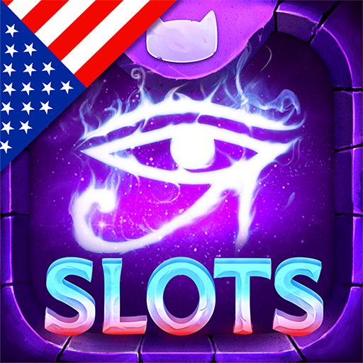

Studio — Dnipro, Ukraine · Remote · murka.com ↗
 Murka
Murka
Unity Software Engineer (Slots Era / R&D) · October 2022 – February 2024. Live-service infrastructure for one of the top social-casino titles: UI animations, audio cues, asset pipelines, backend REST integrations, and multi-platform releases across iOS, Android, Windows, and Facebook.
// SHIPPED TITLE

Slots Era — Jackpot Slots Game
Live-ops infrastructure · backend integration · multi-platform releases
- Controlled the release process on a rotating basis, from preparing production builds to coordinating releases across supported platforms.
- Monitored Firebase Crashlytics and live production issues, investigating crashes and stability problems and coordinating fixes.
- Refactored core systems, breaking down 1,200+ line monolithic scripts into 7–8 smaller, focused components, improving code structure and maintainability.
- Developed and maintained LiveOps features, including events, analytics, monetization, and player-facing features.
- Integrated and supported third-party SDKs and services, including advertising and IAP.
- Worked in a large, structured codebase within the R&D / Tech team, collaborating across multiple teams and following established development processes.
- Shipped and maintained the game across mobile, Windows, and WebGL from a shared Unity codebase.